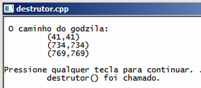

Curso completo de linguagem C++
Gameprog - Escola de programação de jogos digitais
Contato: gameprog.br@gmail.com
track10.html
10. Destrutor
10.1 Destrutores
Enquanto o construtor é um método que deve realizar a inicialização das
propriedades e realizar a alocação de recursos do sistema, o destrutor tem
a função contrária de fazer a desalocação desses recursos e liberar a memória
que foi alocada previamente.
O construtor deve ter o mesmo nome da classe precedida pelo til ( ~ ),
não deve ter argumentos nem valor de retorno, ex.: ~Monstro();
No programa abaixo, nosso programa cria um classe Monstro e na execução do
construtor é criado uma array para guardar o caminho que nosso monstrinho vai
fazer no jogo. No final do programa o destrutor deleta o ponteiro e libera
a memória ao sistema.

// destrutor.cpp
// ilustra o uso de destrutores
#include <iostream>
#include <cstdlib>
using namespace std;
// protótipo de nossas funções básicas
void inicio();
void fim();
struct PONTO {
int x;
int y;
}; // end struct
// Vamos criar uma classe Monstro para criar objetos monstro
class Monstro
{
public:
PONTO *caminho;
Monstro ()
{
caminho = new PONTO[3];
} // fim do construtor()
~Monstro ()
{
cout << "\t destrutor() foi chamado.\n";
delete[] caminho;
fim();
} // fim do destrutor()
void mostrar_caminho()
{
for (int ncx=0; ncx < 3; ncx++)
{
cout << "\t (" << caminho[ncx].x;
cout << "," << caminho[ncx].y << ") \n";
} // endfor
} // fim do método: mostrar_caminho()
void config_caminho (int nponto, int x, int y) {
caminho[nponto]. x = x;
caminho[nponto]. y = x;
} // fim do método: config_caminho()
}; // endclass
int main() {
inicio();
int x, y;
// Criando um objeto da classe monstro
Monstro godzila;
for (int nponto = 0; nponto < 3; nponto++) {
x = rand() % 800;
y = rand() % 600;
godzila.config_caminho (nponto, x, y);
} // endfor
cout << " O caminho do godzila: \n";
godzila.mostrar_caminho();
fim();
} // endmain
//************* funções ******************************************************
void inicio() {
system("color f0");
system("title destrutor.cpp");
cout << "\n";
} // endfunction: initsys()
void fim() {
cout << "\n"; system("pause");
} // endfunction: endsys()
PONTO *caminho;
Monstro () {
caminho = new PONTO[3];
} // fim do construtor()
No código acima nós criamos um ponteiro do tipo estrutura PONTO.
Na sequência, no construtor, alocamos a quantidade de memória para guardar
3 pontos feitos com nossa estrutura.
~Monstro () {
cout << "\t destrutor() foi chamado.\n";
delete[] caminho;
fim();
} // fim do destrutor()
No destrutor liberamos a memória que foi alocada previamente no construtor.
Emitimos uma mensagem via cout para você perceber que o destrutor é chamado
automaticamente no final do programa.
x = rand() % 800;
Aqui usamos a função rand() da biblioteca cstdlib para gerar um número
aleatório entre 0 e 800 que representa aqui, supostamente, a coordenada
x da tela.